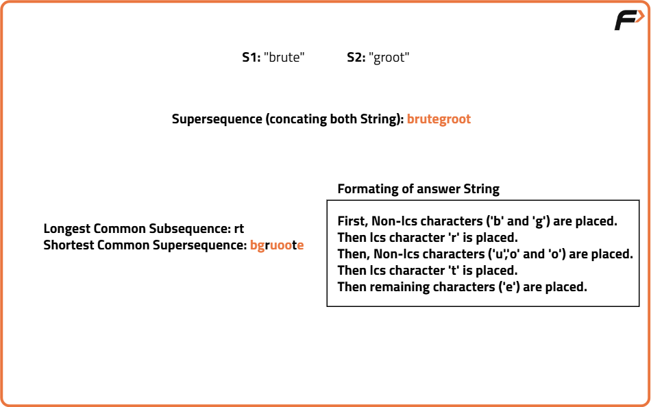
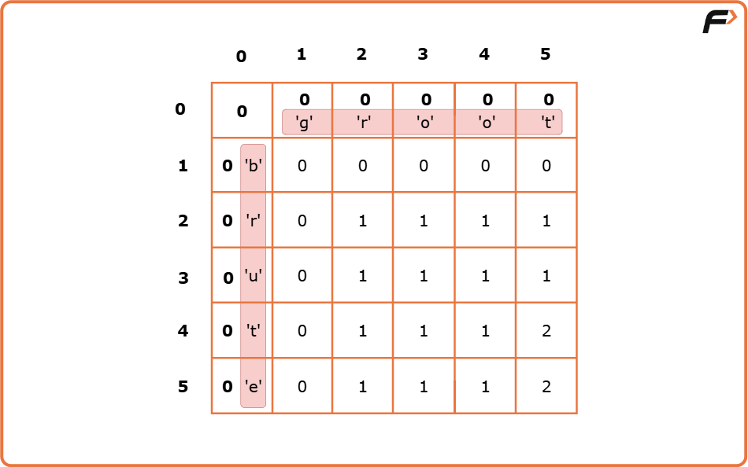
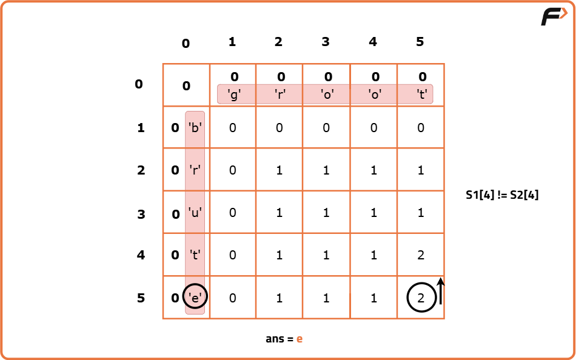
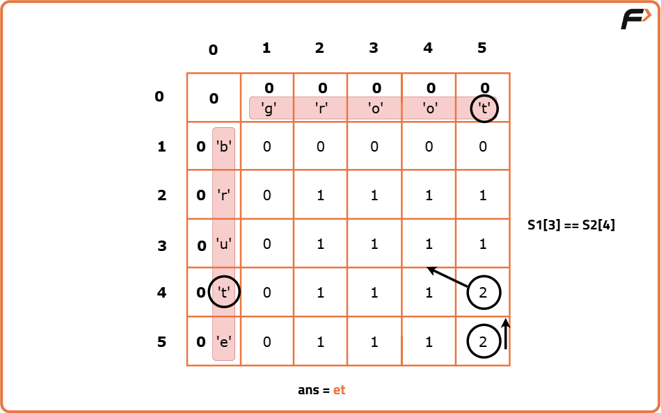
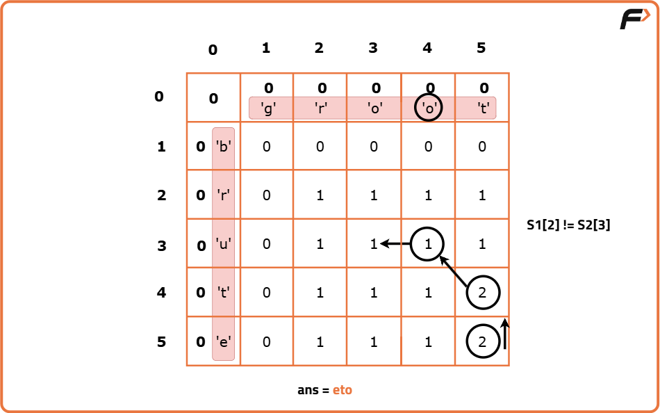
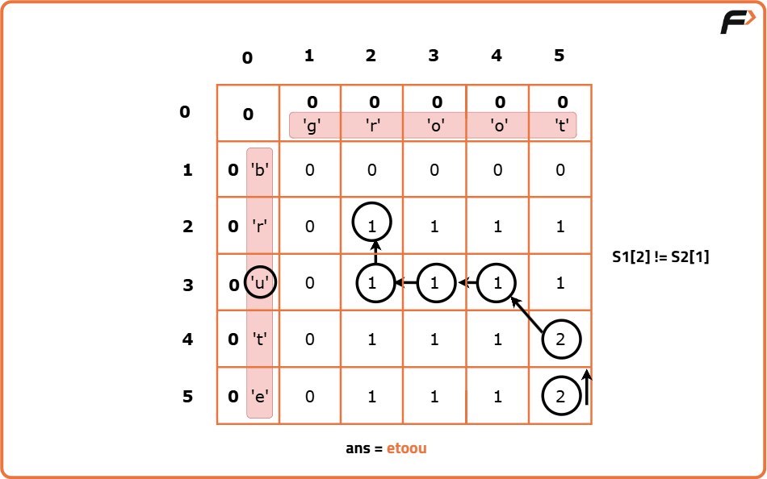
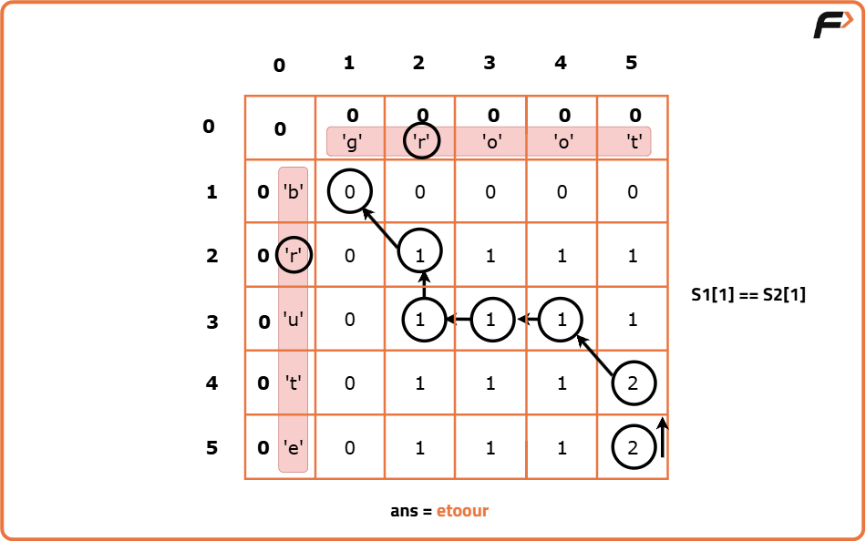
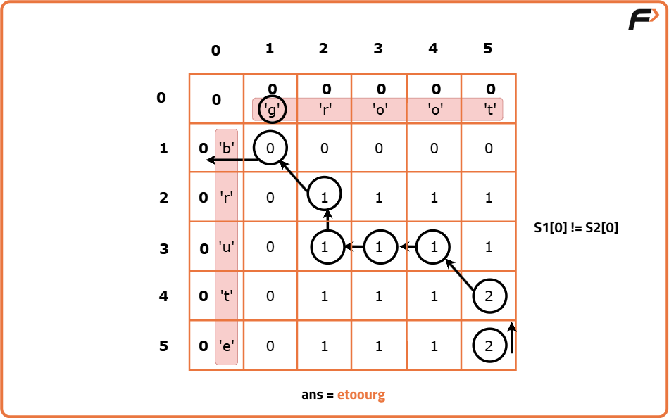
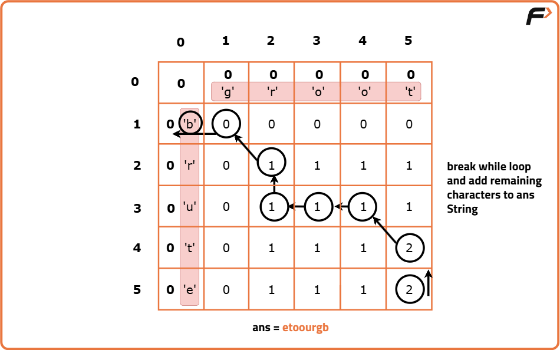

Shortest Common Supersequence | (DP - 31)
Problem Statement: We are given two strings ‘S1’ and ‘S2’. We need to return their shortest common supersequence. A supersequence is defined as the string which contains both the strings S1 and S2 as subsequences.
Examples
Input : str1 = "mno", str2 = "nop" Output :"mnop" Explanation : The shortest common supersequence is "mnop". It contains "mno" as the first three characters and "nop" as the last three characters, thus including both strings as subsequences.
Input :str1 = "dynamic", str2 = "program" Output : "dynprogramic" Explanation :The shortest common supersequence is "dynprogramic". It includes all characters from both "dynamic" and "program", with minimal overlap. For example, "dynamic" appears as "dyn...amic" and "program" appears as "...program..." within "dynprogramic".
Disclaimer: Here is the practice link to help you assess your knowledge better. It's highly recommend trying to solve it before looking at the solution.
Approach
Algorithm
Pre-req: Longest Common Subsequence, Print Longest Common Subsequence
If we keep the “shortest” criteria aside, what can be a way to generate a supersequence given two strings. One easy way is to concat the given strings (write one after the other), this will always give us a supersequence for any pair of given strings.This can be said as the worst case with time complexity of O(n+m), where n and are the lengths of strings S1 and S2 respectively. How can we improve from this naive approach?
If we think a little, there are some common characters that we can avoid writing for both the strings separately. These common characters can’t be all the common characters. They are the characters that are common and come in the same order. In other words, they are the characters of the longest common subsequence.
In an optimum solution, the characters of the longest common subsequence are written only once and other characters are placed around them. For every character that belongs to the longest common subsequence, the non-lcs characters coming before them in the strings S1 and S2 are placed before the lcs-character in the answer string.
Length of Shortest Common Supersequence?
From the explanation above, we can see that characters of lcs need to be covered only once. Therefore, the length of the shortest Common supersequence = n + m -k, where (n and m are lengths of S1 and S2, and k is the length of the lcs string).
Finding the supersequence string
Now, instead of the length, we are interested in finding the shortest supersequence string itself. Readers are highly advised to read the article Print Longest Common Subsequence.
When we form the DP table to calculate the longest common subsequence (as done in Print Longest Common Subsequence) we have all the information of characters that are coming in the lcs string and characters that don’t. We use this same DP table to form the shortest common supersequence. To frame the string, we need to understand how the dp table was formed and work in the reverse process.Now, let us see what were the conditions that we used while forming the dp array:
- if(S1[i-1] == S2[j-1]), then return 1 + dp[i-1][j-1]
- if(S1[i-1] != S2[j-1]) , then return 0 + max(dp[i-1][j],dp[i][j-1])
We will start from the right-most cell of the dp array, initially i=n and j=m. To form the string, we will work in a reverse manner.
- if(S1[i-1] == S2[j-1]), this means the character is an lcs character and needs to be included only once from both the strings, so we add it to the ans string and reduce both i and j by 1. We reduce them simultaneously to make sure the character is counted only once.
- if(S1[i-1] != S2[j-1]), this means that the character is a non-lcs character and then we move the pointer to the top cell or left cell depending on which is greater. This way non-lcs characters will be included separately in the right order.
- We start from cell dp[n][m]. Initially i=n and j=m.
- At every cell, we will check if S1[i-1] == S2[j-1], if it is then it means this character is a part of the longest common subsequence. So we will push it to the ans string str. Then we will move to the diagonally top-left cell by assigning i to i-1 and j to j-1.
- Else, this character is not a part of the longest common subsequence so we include it in ans string. Originally this cell got its value from its left cell (←) or from its top cell (↑). Whichever cell’s value will be more of the two, we will move to that cell.
- We will continue till i>0 and j>0, failing it we will break from the loop.
- After breaking, either i>0 or j>0 (only one condition will fail to break from the while loop), if(i>0) we push all the characters from S1 to ans string, else if(j>0), we push all the remaining characters from S2.
- At last, we reverse the ‘ans’ string and we get our answer.









Code
#include <bits/stdc++.h>
using namespace std;
class Solution {
public:
// Function to return the shortest common supersequence of two strings
string shortestSupersequence(string s1, string s2) {
// Get the lengths of the two strings
int n = s1.size();
int m = s2.size();
// Create a 2D DP table to store lengths of LCS
vector<vector<int>> dp(n + 1, vector<int>(m + 1, 0));
// Initialize base cases: when either string is empty
for (int i = 0; i <= n; i++) {
dp[i][0] = 0;
}
for (int i = 0; i <= m; i++) {
dp[0][i] = 0;
}
// Fill the DP table using bottom-up approach
for (int ind1 = 1; ind1 <= n; ind1++) {
for (int ind2 = 1; ind2 <= m; ind2++) {
// If characters match, take diagonal + 1
if (s1[ind1 - 1] == s2[ind2 - 1])
dp[ind1][ind2] = 1 + dp[ind1 - 1][ind2 - 1];
// Otherwise, take max from left or top
else
dp[ind1][ind2] = max(dp[ind1 - 1][ind2], dp[ind1][ind2 - 1]);
}
}
// Start from bottom-right of the DP table to build the supersequence
int i = n;
int j = m;
string ans = "";
// Traverse the table in reverse to find the supersequence
while (i > 0 && j > 0) {
// If characters are equal, include it once
if (s1[i - 1] == s2[j - 1]) {
ans += s1[i - 1];
i--;
j--;
}
// Move in the direction of greater value
else if (dp[i - 1][j] > dp[i][j - 1]) {
ans += s1[i - 1];
i--;
} else {
ans += s2[j - 1];
j--;
}
}
// If any characters are left in s1, add them
while (i > 0) {
ans += s1[i - 1];
i--;
}
// If any characters are left in s2, add them
while (j > 0) {
ans += s2[j - 1];
j--;
}
// Since we added characters in reverse order, reverse the result
reverse(ans.begin(), ans.end());
// Return the final shortest supersequence
return ans;
}
};
// Driver code
int main() {
// Define input strings
string s1 = "brute";
string s2 = "groot";
// Create object of Solution class
Solution obj;
// Call the function and print result
cout << "The Shortest Common Supersequence is " << obj.shortestSupersequence(s1, s2);
return 0;
}
Complexity Analysis
Time Complexity: O(n * m), Filling the DP table takes O(n * m), and backtracking adds O(n + m), which is negligible compared to the main DP.
Space Complexity: O(n * m),A 2D DP array of size (n+1) × (m+1) is used.